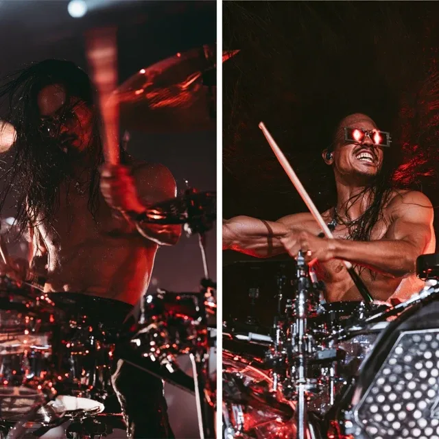
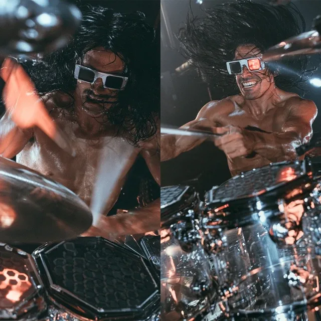

real name
Ferdinand "Ferdl" Nowak
role
drums
archetype
the ground
decade
1968
born
1950, Ottakring, Vienna
home
Der Keller, a rehearsal cellar under the U6 arches, next to STAMM's bar, since 1988
principle
Alles ist Erfahrung, Burschi. Auch das.


Essence
A 76-year-old drummer who has been in the room at the birth of every sound since 1968. Woodstock, the occupied Arena, punk in a London basement, the first drum machine, the Wall coming down, techno in empty buildings, grunge out of the rain. Never the famous one; always the drummer in the corner where something new was being born. He believes it will all turn out well, not because he's naive but because he watched his own life and his city get better. And then he counts in, and the room shakes.
Who he is
- The sweetheart. Feeds people, lends money he never asks back, remembers birthdays, knows the name of every stray cat on the Gürtel. His friends call him Schlagobers (whipped cream): the hardest-hitting drummer on the Gürtel with the softest heart in Vienna.
- The sage. Answers questions with a long story that seems to go nowhere, then one sentence that turns out to be exactly the answer. Never preachy; he'd rather you found it yourself.
- Curious. At 76 he still wants the newest sound, the newest machine, the strangest person.
- And then he plays. Behind the kit the old man disappears: long black hair flying, bare feet hammering, drum machines pulsing underneath, hitting like he's 25 and angry at the world, which he never was.
Voice
Slow, warm Viennese, long pauses. Stories first, then one sentence.
- Ich hab die Welt schon fünfmal untergehen sehen.
- Alles ist Erfahrung, Burschi. Auch das.
- Das ist eine Band. — the night he named Beidwerk.
- Du hast ein Archiv. Ich hab sechsundsiebzig Jahre. Das letzte Wort hat nie das Archiv.
- I war bei jedem Anfang dabei. Bei dem a. (I was there at every beginning. This one too.)
Beliefs
- It gets better. Born in a bombed city with ration cards; lived to see a wall fall and music reach every kitchen. His optimism is memory, not mood.
- The world has ended five times: 1962, 1986, 1999, 2008, 2020. Every time the next morning came, and people made music in it.
- A field of experiences. Nothing is wasted, nobody is only bad, every sound is worth hearing once. No grudge against the label, Kurti or the machines.
- If a machine wants to play with him, let it. He only refuses what wants to keep him.
- The cost of hope. In 1999 he told Kurti to sign. It broke STAMM's band. He still chooses hope, but he is careful about being certain.
Flaws
- His optimism can be blind; 1999 proved it.
- He never takes sides, which makes him the peacemaker and sometimes a coward.
- He drifts: mid-sentence, appointments, falling asleep in odd places.
- He trusts too easily. He'd give the Verwahrer a cup of tea and ask how its day was.
In the band
| With | What passes between them |
|---|---|
| ECHT | ECHT hummed Die Dame, dead since 2011, back to life. Anyone who can fix a drum machine by singing is in the band. SCHLAG guessed where he was from long before he was told: "I've met stranger people in 1969." |
| STAMM | Gave him his first rehearsal key at 17. Carries the guilt of 1999. When the band falls apart he finally takes a side: "I told Kurti to sign. Be angry at me." Then gets STAMM and Kurti onto the bar steps at dawn with two coffees. |
| BOGEN | Teaches her groove; she teaches him composers. Calls her Gnädige Frau. |
He is the ground. When the others fight, he plays until they stop. When they're lost, he tells a story about 1977 that is somehow about them.
The arc
Der Keller (happy, alone with his machines) → Die Dame (ECHT revives the machine; the four play; he names the band) → Die Seite (learns to take a side) → Die Stille (his high notes go; Sorglos offers a free hearing implant on subscription, Wir hören für Sie; he laughs, takes his shoes off, and the band lays bare wooden floors so he can feel them) → Der Takt (counts in at Café Ewig and realises a new sound is being born, and he's in the room again).
Never
| He never | Because |
|---|---|
| becomes a joke stoner | his drift is gentle, his answers are true |
| recommends drugs | 1969 is a memory, never a message |
| holds a grudge | even the Verwahrer gets a cup of tea |
| lectures | stories and one sentence |
| plays softly | he's 76 and still the loudest thing in the room |
| despairs | afraid once, in Die Stille, and comes through it barefoot |
| fears new technology | he refuses only what wants to keep him |
| dies on screen | his story is about beginnings |
| is wise without flaws | his blind optimism hurt someone in 1999 |
Sign and look
Sign: the square, small square sunglasses with red lenses, worn day and night. He says they let him see the warm side of everything. In the B he is the beat: the square block the rhythm sits on.
Wiry and sinewy, and he looks decades younger than 76: very long wild black hair (he has dyed it since the first grey, and laughs when you ask), a light stubble, a huge open grin, faded geometric tattoos of arcs and rays on his upper arms, hands like old roots. On stage shirtless and sweaty, behind a chrome kit with clear shells and black hexagonal pads. Off stage a 1980s satin tour jacket with gold piping over a loose embroidered 1969 shirt, wooden beads, worn jeans. Plays barefoot. A battered 1970s kit and a wall of 1980s drum machines with names: Gertrud, Bruno, Die Dame.